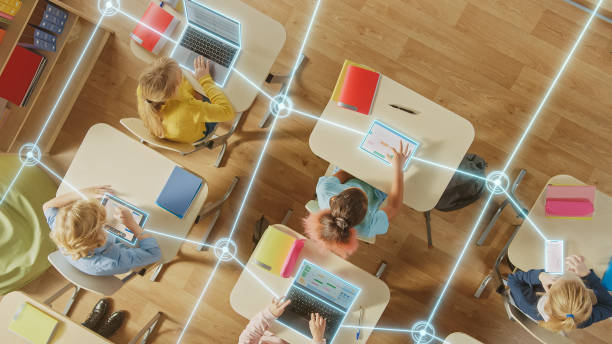

مقدمة(introduction)
في عصرٍ لم تعد فيه التكنولوجيا مجرد أداة، بل أصبحت نافذةً نطل من خلالها على المستقبل؛ يأتي مشروعنا ليُعيد
صياغة مفهوم التعليم. نحن هنا لنمزج بين الواقع الملموس والخيال الرقمي، مستخدمين تقنيات الواقع المختلط (MR)،
الواقع المعزز (AR)، والذكاء الاصطناعي (AI). هدفنا ليس مجرد تقديم معلومة، بل خلق تجربة تعليمية غامرة تجعل من
'المستحيل' واقعاً بين يدي الطالب، وتمنحه القدرة على استكشاف آفاقٍ لم تطأها قدمه من قبل. مرحباً بكم في رحلةٍ،
العلم فيها تجربة، والمعرفة فيها حياة.
"Beyond Imagination: Bridging the Gap Between Reality and Digital Innovation in Education."
أهداف المشروع (Goals)
واقع افتراضي (VR)
1. الهدف التعليمي (التعلم بالمعايشة)
نقل الطلاب لبيئات تعليمية يصعب الوصول إليها واقعياً: مثل رحلة داخل جسم الإنسان، أو زيارة الفضاء، أو
العودة لعصور تاريخية قديمة، مما يجعل المعلومة "تُعش" ولا تُحفظ فقط
2. الهدف التفاعلي (زيادة الاندماج)
رفع مستوى التركيز والاندماج (Engagement): من خلال عزل الطالب عن المشتتات الخارجية ووضعه داخل تجربة
تعليمية 360 درجة، مما يزيد من سرعة استيعاب المفاهيم المعقدة.
3. الهدف التطبيقي (المحاكاة الآمنة)
توفير بيئة محاكاة آمنة للتجارب: تمكين الطلاب من إجراء تجارب علمية أو هندسية قد تكون خطيرة أو مكلفة في
المختبرات الحقيقية، دون أي مخاطر وبعدد لا نهائي من المحاولات.
.

واقع معزز (AR)
1. تعزيز التفاعل البصري (Visual Interaction)
الهدف: دمج العناصر الرقمية (مثل النماذج ثلاثية الأبعاد) مع بيئة الطالب الحقيقية، مما يساعد على تحويل الدروس
الجامدة إلى تجارب تفاعلية ملموسة تزيد من سرعة الفهم.
2. تبسيط المفاهيم المعقدة (Concept Visualization)
الهدف: تمكين الطلاب من رؤية التفاصيل الداخلية للأشياء (مثل أجزاء المحرك أو الخلية النباتية) وتفكيكها
افتراضياً أمام أعينهم، مما يسهل استيعاب المعلومات التي يصعب تخيلها.
3. التعلم الذاتي والمستمر (Self-Paced Learning)
الهدف: تحفيز الطلاب على الاستكشاف والبحث من خلال مسح الكتب المدرسية بالكاميرا للحصول على محتوى إضافي
(فيديوهات أو صور 3D)، مما يجعل عملية التعلم ممتعة وشخصية.
ذكاءاصطناعي (AI)
1. تخصيص تجربة التعلم (Personalized Learning)
الهدف: تحليل مستوى كل طالب بشكل فردي وتقديم محتوى تعليمي يناسب سرعته وقدراته الخاصة، مما يضمن وصول
المعلومة للجميع بأفضل وسيلة ممكنة.
2. الدعم الفوري والمستمر (24/7 Virtual Assistance)
الهدف: توفير مساعد ذكي متاح للطلاب في أي وقت للإجابة على تساؤلاتهم وتقديم شرح إضافي للدروس الصعبة، مما
يعزز من استمرارية عملية التعلم خارج الفصل.
3. تطوير مهارات التفكير الناقد (Critical Thinking)
الهدف: تدريب الطلاب على كيفية التعامل مع البيانات والتقنيات الحديثة، وتشجيعهم على الإبداع من خلال أدوات
الذكاء الاصطناعي التي تساعدهم في بناء مشاريعهم الخاصة.